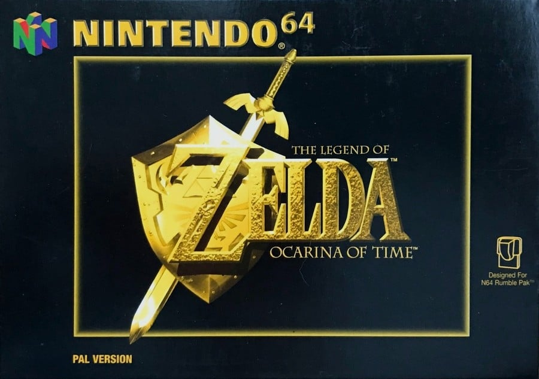
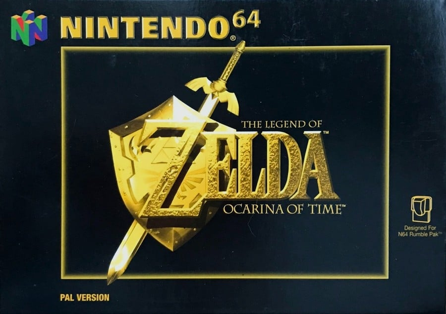

This is the vision of the internet I had back in 1999, inspired by
the blockbuster video game, Metal Gear Solid,
as well as the style format
of Windows 98. This was a time when coolness was defined by restraint and
non-chalance, attitude schooled behind indifference. Styles in all fashions
were reflecting that.
This is the style I envisioned at the time, counter to the bright and colourful websites that were dominating the late 90s, dazzling all who visit their web pages with glittering visuals and crisp sound bites. I didn't get to experience that at home, as the internet was very expensive, and our access was very limited, and monitored by my dad.
Films were showing stylised versions of computing around the millenium, such as in blockbuster movies like Swordfish, and The Matrix. For someone growing up in the 90s, I was shown simple and satisfying ways to display information that appeal to a generation obsessed with grunge, boy bands, and girl groups.
Much of my internet browsing was at school, on BBC, AskJeeves, Lycos, or Yahoo. Graphics were minimal, used for icons or flashy animations, with few photos, being mindful of connection costs. Sounds would punctuate elements with a ding or a whoosh blasting through your speakers. The 90s were loud on the eyes and the ears.
Exciting times...


I was a child in the 90s, so everything was new for me, but everything also had a permanence, like it had always been there and always would be. I really had no concept of things being new or old, they just were, whether it was hearing a song on the radio, seeing a show on TV, or watching a movie.
The way I experienced movies in the 90s was on VHS. I had some kids TV on those casettes, such as Budgie The Helicopter, Portland Bill, Mr Blobby, and Pingu, but the first movie I would watch was Toy Story, and I watched that almost daily. As for live-action, my first feature film was Stargate.
My interest in live-action films on VHS were action movies. Pierce Brosnan, Tom Cruise, Tommy Lee Jones, I felt the influence of these authority figures in catastrophic circumstances as role models of what it means to be a man, especially in changing times in social politics.
As we were coming up to the millenium, society in the 90s chased new and original in ways that hadn't been seen in living memory, trying to imagine a new world for the 21st century. A world with innovation at the forefront of human endeavour. A world unrestrained by reality.
The world is our playground...
 


Video games. They've been around almost as long as computers have, but the 90s gave us a monumental leap in graphical technology, able to present characters and worlds in 3D for the first time. The platforms at the forefront of this technology were the Nintendo 64 and the Sony PlayStation.
Nintendo's N64 was a powerhouse. A monstrous demonstration of gaming innovation and excellence virtually unrivalled at the time. It's ability to render and realise fully 3D worlds was unparalleled. Mario, Turok, Goldeneye, The Legend of Zelda, all had gamers coming back time and again. It certainly left an impression on me.
Sony's PlayStation was truly revolutionary. It came with a shining storage solution in the form of CD. With it, came the ability to play across multiple disks, expanding the experiences of games considerably, something revered franchises Final Fantasy, Resident Evil, and Metal Gear Solid all took advantage of.
Many of my generation will argue which one of these consoles was the best, but for me, I wouldn't be who I am without both of them. What was cutting edge technology was also met with limitations, of scope, of cost, of time, yet true masterpieces were created in spite of those limitations.